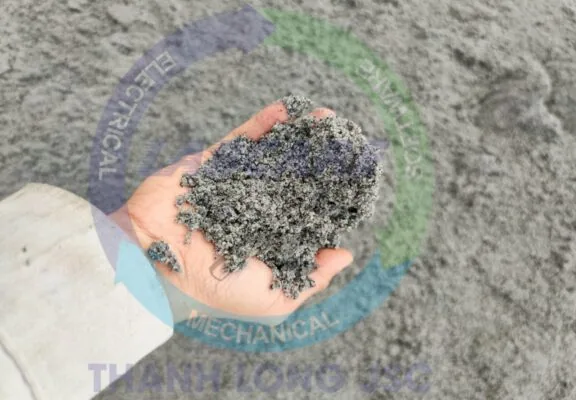

Tiêu chuẩn cát nghiền cần đạt được – Thanh Long JSC làm cát nghiền có lợi hay không?
Tiêu chuẩn cát nghiền cho Bê tông và Vữa (TCVN 9205 : 2012)
TIÊU CHUẨN QUỐC GIA TCVN 9205 : 2012
TIÊU CHUẨN CÁT NGHIỀN CHO BÊ TÔNG VÀ VỮA Crushed sand for concrete and mortar
Lời nói đầu
TCVN 9205 : 2012 được chuyển đổi từ TCXDVN 349:2005 theo quy định tại khoản 1 Điều 69 của Luật Tiêu chuẩn và Quy chuẩn kỹ thuật. Điểm a khoản 1 Điều 7, Nghị định số 127/2007/NĐ-CP ngày 1/8/2007 của Chính phủ quy định. Chi tiết thi hành một số điều của Luật Tiêu chuẩn và Quy chuẩn kỹ thuật.
TCVN 9205 : 2012 do Viện Vật liệu xây dựng – Bộ Xây dựng biên soạn, Bộ Xây dựng đề nghị. Tổng cục Tiêu chuẩn Đo lường Chất lượng thẩm định, Bộ Khoa học và Công nghệ công bố. CÁT NGHIỀN CHO BÊ TÔNG VÀ VỮA Crushed sand for concrete and mortar
1. Phạm vi áp dụng tiêu chuẩn cát nghiền
Tiêu chuẩn này áp dụng cho cát nghiền, được sản xuất bằng cách nghiền các loại đá tự nhiên. Có cấu trúc đặc chắc đến các cỡ hạt đạt yêu cầu dùng để chế tạo bê tông và vữa.
2. Tài liệu viện dẫn tiêu chuẩn cát nghiền
Các tài liệu viện dẫn sau là cần thiết khi sử dụng tiêu chuẩn này. Đối với các tài liệu viện dẫn ghi năm công bố thì áp dụng bản được nêu. Đối với các tài liệu viện dẫn không ghi năm công bố thì áp dụng phiên bản mới nhất, bao gồm các bản sửa đổi (nếu có).
TCVN 344:1986, Cát xây dựng – Phương pháp xác định hàm lượng sét.
TCVN 7572-1:2006. Cốt liệu cho bê tông và vữa – Phương pháp thử – Phần 1. Lấy mẫu.
TCVN 7572-2:2006. Cốt liệu cho bê tông và vữa – Phương pháp thử – Phần 2. Xác định thành phần hạt.
TCVN 7572-14:2006. Cốt liệu cho bê tông và vữa – Phương pháp thử – Phần 14. Xác định khả năng phản ứng kiềm – silic.
TCVN 7572-15:2006. Cốt liệu cho bê tông và vữa – Phương pháp thử – Phần 15. Xác định hàm lượng clorua.
tiêu chuẩn cát nghiền trong bê tông
3. Yêu cầu kỹ thuật tiêu chuẩn cát nghiền
3.1. Theo giá trị mô đun độ lớn, cát nghiền được phân ra hai nhóm chính:
– Cát thô khi mô đun độ lớn trong khoảng từ lớn hơn 2,0 đến 3,3.
– Cát mịn khi mô đun độ lớn trong khoảng từ 0,7 đến 2,0.
3.2. Thành phần hạt của cát nghiền, biểu thị qua lượng sót tích lũy trên sàng, nằm trong phạm vi quy định trong Bảng 1.
Bảng 1 – Thành phần hạt của tiêu chuẩn cát nghiền
| Kích thước lỗ sàng | Lượng sót tích lũy trên sàng, % theo khối lượng | ||
| Cát thô | Cát mịn | ||
| 2,5 mm | Từ 0 đến 25 | 0 | |
| 1,25 mm | Từ 15 đến 50 | Từ 0 đến 15 | |
| 630 mm | Từ 35 đến 70 | Từ 5 đến 35 | |
| 315 mm | Từ 65 đến 90 | Từ 10 đến 65 | |
| 140 mm | Từ 80 đến 95 | Từ 65 đến 85 | |
| CHÚ THÍCH: | – Lượng sót riêng trên mỗi sàng không được lớn hơn 45 %.
– Đối với các kết cấu bê tông chịu mài mòn và chịu va đập, hàm lượng hạt lọt qua sàng có kích thước lỗ sàng 140 mm không được lớn hơn 15 %. |
||
3.3. Cát thô được sử dụng chế tạo bê tông và vữa. Cát mịn chỉ được sử dụng chế tạo vữa.
3.4. Hàm lượng hạt trên sàng có kích thước lỗ sàng 5 mm đối với cát nghiền dùng chế tạo vữa, phần trăm theo khối lượng, không lớn hơn 5 %.
3.5. Hàm lượng hạt lọt qua sàng có kích thước lỗ sàng 75 mm, phần trăm theo khối lượng, không lớn hơn:
– Đối với cát thô: 16 %
– Đối với cát mịn: 25 %
CHÚ THÍCH: Đối với các kết cấu bê tông chịu mài mòn và chịu va đập, hàm lượng hạt qua sàng có kích thước lỗ sàng 75 mm không được lớn hơn 9 %.
3.6. Tùy thuộc vào yêu cầu cụ thể, có thể sử dụng cát nghiền có hàm lượng hạt lọt qua sàng có kích thước lỗ sàng 140 mm và 75 mm khác với các quy định trên nếu kết quả thí nghiệm cho thấy không ảnh hưởng đến chất lượng bê tông và vữa.
3.7. Hàm lượng hạt sét không lớn hơn 2 %.
3.8. Hàm lượng clorua trong cát nghiền, tính theo ion Cl– tan trong axit, quy định trong Bảng 2.
3.9. Cát nghiền được sử dụng khi khả năng phản ứng kiềm – silic của cát kiểm tra theo phương pháp hóa (TCVN 7572-14:2006) nằm trong vùng cốt liệu vô hại. Khi kết quả kiểm tra khả năng phản ứng kiềm – silic của cát nghiền nằm trong vùng có khả năng gây hại thì phải thí nghiệm kiểm tra bổ sung theo phương pháp thanh vữa (TCVN 7572-14:2006) để đảm bảo chắc chắn vô hại.
Cát nghiền được coi là không có khả năng xảy ra phản ứng kiềm – silic nếu biến dạng (e) ở tuổi 6 tháng xác định theo phương pháp thanh vữa nhỏ hơn 0,1 %.
Bảng 2 – Hàm lượng ion Cl– trong tiêu chuẩn cát nghiền
| Loại bê tông và vữa | Hàm lượng ion Cl– tan trong axit,
% theo khối lượng, không lớn hơn |
| Bê tông dùng trong các kết cấu bê tông cốt thép ứng lực trước | 0,01 |
| Bê tông dùng trong các kết cấu bê tông, bê tông cốt thép và vữa thông thường | 0,05 |
| CHÚ THÍCH: Cát nghiền có hàm lượng ion Cl– lớn hơn giá trị quy định ở Bảng 2 có thể được sử dụng nếu tổng hàm lượng ion Cl– trong 1 m3 bê tông từ tất cả các nguồn vật liệu chế tạo không vượt quá 0,6 kg. |

4. Phương pháp thử tiêu chuẩn cát nghiền
4.1. Lấy mẫu thử theo TCVN 7572-1:2006.
4.2. Xác định thành phần hạt theo TCVN 7572-2:2006.
4.3. Xác định hàm lượng sét theo TCVN 344:1986.
CHÚ Ý: Khi tiến hành lấy 100 mL nước đục ở độ sâu 100 mm và 100 mL nước cất phải định lượng bằng pipét 100 mL để đảm bảo độ chính xác.
4.4. Xác định khả năng phản ứng kiềm – silic trong cát nghiền bằng phương pháp hóa học theo TCVN 7572-14:2006.
4.5. Xác định khả năng phản ứng kiềm – silic trong cát nghiền bằng phương pháp thanh vữa theo TCVN 7572-14:2006.
4.6. Xác định hàm lượng ion Cl– theo TCVN 7572-15:2006.
4.7. Xác định hàm lượng hạt nhỏ hơn 75mm
4.7.1. Nguyên tắc
Hàm lượng hạt nhỏ hơn 75 mm, xác định bằng phương pháp sàng ướt qua sàng có kích thước lỗ sàng 75 mm, là khối lượng mẫu mất đi sau khi sàng ướt, tính bằng phần trăm khối lượng mẫu ban đầu.
4.7.2. Thiết bị, dụng cụ
– Cân kỹ thuật, độ chính xác 0,1 g.
– Bộ sàng hai cái, sàng dưới có kích thước lỗ 75 mm, sàng trên có kích thước lỗ 1,25 mm.
– Thùng đựng mẫu có kích thước đủ để chứa mẫu và nước, cho phép khi khuấy không làm mất mẫu và nước.
– Khay đựng mẫu bằng kim loại.
– Tủ sấy có bộ phận điều chỉnh và ổn định nhiệt độ ở (110 ± 5) oC.
4.7.3. Cách tiến hành
– Mẫu thử được lấy theo TCVN 7572-1:2006. Sấy khô mẫu đến khối lượng không đổi ở nhiệt độ (110 ± 5) oC. Để nguội mẫu đến nhiệt độ phòng thí nghiệm. Sàng loại bỏ cỡ hạt lớn hơn 5 mm. Cân lấy khoảng 300 g mẫu, chính xác đến 0,1 g được khối lượng m1.
– Cho mẫu thử vào thùng đựng mẫu và đổ nước đủ để phủ kín mẫu. Khuấy mạnh vừa đủ để phân tách hoàn toàn các hạt mịn nhỏ hơn 75 mm khỏi các hạt thô, làm cho các hạt mịn ở dạng lơ lửng. Ngay sau đó gạn đổ nước rửa có chứa các hạt lơ lửng và các chất rắn đã hòa tan vào bộ sàng, sàng có kích thước lỗ 1,25 mm nằm ở trên và sàng có kích thước lỗ 75 mm nằm ở dưới. Đổ cẩn thận để tránh làm mất các hạt thô trong mẫu thử.
– Đổ thêm nước vào trong thùng, khuấy mẫu và gạn đổ nước như trước. Lặp lại quá trình này cho đến khi nước rửa trong thì dừng.
– Đổ tất cả mẫu đã rửa sạch và các hạt còn lại trên các sàng vào khay sạch. Sấy khô mẫu đã rửa đến khối lượng không đổi ở nhiệt độ (110 ± 5) oC, cân mẫu chính xác đến 0,1 g được khối lượng m2.
4.7.4. Biểu thị kết quả
Hàm lượng hạt nhỏ hơn 75 mm (M), tính bằng phần trăm (%), chính xác đến 0,1 g, theo công thức: M=((m1-m2)*100)/m1
Trong đó:
- m1: khối lượng mẫu sấy khô trước khi rửa, tính bằng g
- m2: khối lượng mẫu sấy khô sau khi rửa, tính bằng g
Kết quả thử hàm lượng hạt nhỏ hơn 75 mm tính bằng trung bình cộng của hai lần thử song song. Nếu kết quả giữa hai lần thử chênh lệch nhau quá 1 %, cần tiến hành thử lần thứ ba và kết quả trung bình được lấy từ hai giá trị gần nhau.
5. Vận chuyển và bảo quản tiêu chuẩn cát nghiền
5.1. Mỗi lô cát nghiền phải có giấy chứng nhận chất lượng kèm theo, trong đó ghi rõ:
– Tên cơ sở cung cấp, địa chỉ, điện thoại, fax;
– Loại đá gốc tự nhiên dùng sản xuất cát nghiền;
– Số lô và khối lượng;
– Kết quả thí nghiệm các chỉ tiêu, tính chất của cát nghiền.

5.2. Cát nghiền được vận chuyển bằng xà lan, tàu hỏa, ôtô hoặc bằng các phương tiện khác mà không làm biến đổi các tính chất cơ, lý và hóa học của cát nghiền.
5.3. Cát nghiền có thể được bảo quản ở kho có mái che hoặc sân bãi nơi khô ráo.
5.4. Khi vận chuyển và bảo quản cát nghiền phải để riêng từng loại, tránh để lẫn tạp chất.